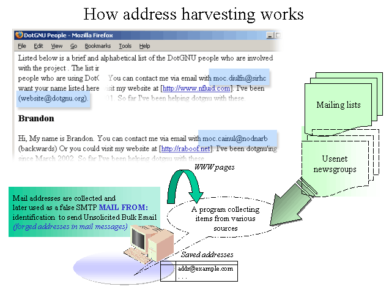
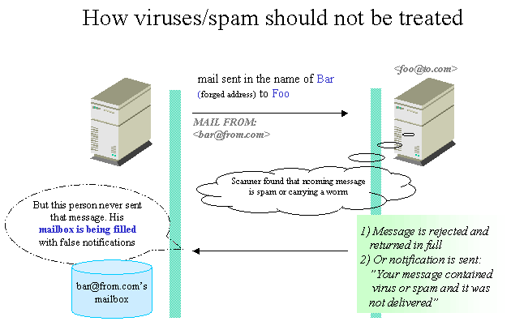
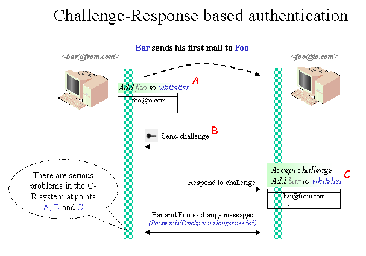
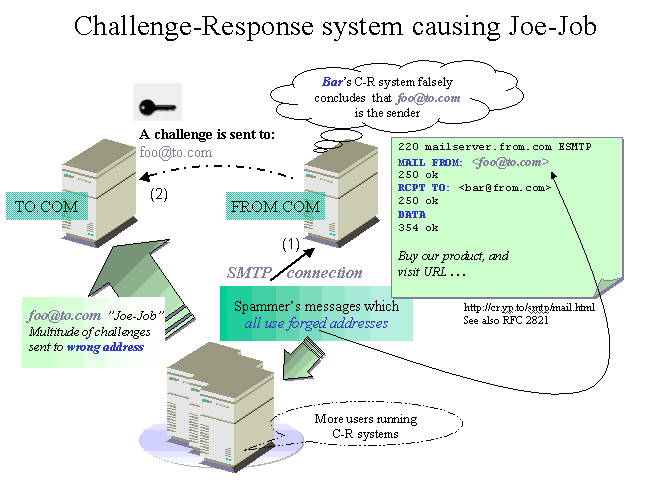

1.1 Bouncing messages do no good
| Note: the bounces referred here concern only messages that are sent from accounts that have already accepted messages. Mail transport layer reject messages are not in this sense bounces, but delivery status notifications (DSNs). The mail server is the only place where rejects may be handled intelligently with SPF and other methods. Individual account holders disencouraged to practice bouncing or other message replying tactics. |
In today's Internet, where message count has increased sky high, the sender's address no longer reveal the spammer behind it. Using a procmail recipe or other auto-responder program which would bounce the message back does nothing but harm because the bulk spammers use other people's email addresses. The programs are not replying to the real originator of the messages, but to poor individuals whose addresses had been hijacked by collecting them form Usenet newsgroups, web pages, mailing lists etc.
|  |
|
Picture 1. In addition to "fake addresses" spammers also collect valid addresses which are then used in forgeries. A reply to Unsolicited Bulk Email message will not reach the real originator, but a innocent individual, whose email address has been abused.
|
In the "Winning the War on Spam" (2003) Joe St Sauver Ph.D. addressed the amazing figures that spam covers around 70 % of the total messages delivered. The big ISPs like according to Senderbase and Sauver handle vast amount of messages: Yahoo 841, Hotmal 532 and 331 AOL million/day. Those volumes explain a number of things.
![[Picture 2. pic/postini.com-stats.png]](pic/postini.com-stats.png)
|
|
Picture 2. Spam statistics reported by www.postini.com/sats as of 2005-05-18. According to finer statistics page link "More Spam statistics" in picture, the amount of bulk email was 97 % and during six months 102 terabytes of spam were fallen into traps.
|
New kind of attacks (see Stopping the "New" Spam: Directory-Harvest Attacks) have also been serious threat to attempt to gain access to normal email addresses. With DHA if the spammer has a few addresses at company which shows their email format appears to follow FIRST_NAME LAST_NAME @example.com scheme, then they can try generating messages based on people's names mentioned in the company's web pages. The other harvesting methods were described in comp.mail.misc thread 2004-12-03:
UBE senders generally harvest mailbox names from Usenet by using the "XOVER" NNTP extension (RFC 2980). An article overview comprises the subject, author, date, message-id, references, byte count, and line count of an article. In particular: Because it doesn't comprise the "Reply-To:" field, mailboxes that occur only in "Reply-To:" fields are rarely harvested; and because it does comprise the "Message-ID:" field, UBE can often be seen sent to bizarrely named mailboxes that are actually the message IDs of articles. UBE senders rarely download entire articles and harvest them. Parsing overview information is easy (It's designed to be machine parseable.), whereas scanning article bodies is a lot harder. Mailbox names in message bodies are rarely harvested. Generally the actual cause of mailbox names being harvested from message bodies is when a UBE sender's web crawler follows a hyperlink to a message published by a company providing a web interface to Usenet. (Notice that, as of today, Google Groups no longer handily converts mailbox names into "mailto:" hyperlinks - which are also easy to harvest. However, this is not true of all web interfaces to Usenet.) --Jonathan de Boyne Pollard
The bounces or auto-replies sent today from various sources are amplifying the traffic problem. One particular issue is the handling of message that carry a virus. Many sites have integrated virus scanners to their mail servers (MTA; Mail Transfer Agent) to check all incoming messages, so that their internal computers are not infected. But many do not know that the de facto response to "reject" a message containing Unsolicited Bulk Email or virus is very bad strategy. Some sites may enable a feature which sends "friendly notifications" to warn that the message contained a virus. The idea may have been to help make the sender aware of the problem and have him check his environment. It can be easily seen how these rejects and auto-replies from virus and spam scanners are spreading the problem.
|  |
|
Picture 3. Virus messages are so special, that the normal mail server reject is COMPLETELY improper action to take. In 99.99% of the virus messages, it will not be the RCPT FROM: who is sending the virus. The address is a lie and when message is rejected, it will simply be forwarded to some other person who later finds it from his mailbox. This is also example of a "Joe-Job" (See later).
|
How would the mail server react, when it notices questionable message which is flagged as spam or which is carrying a virus? It could:
- accept and drop the message
- reject, causing previous mail server to raise a DSN
- accept and send onward
- accept, strip, and send onward
- or don't look, so it is unwittingly accepted and send onward.
There are strong arguments that all the last four are wrong, and are likely to cause an innocent person to be affected. The only sensible action is the first one. There is really no place where messages could be sent. A quarantine or dev/null are the only reasonable valid destination. It would be good if every mail server would perform a checks so that end user's wouldn't need to worry. The mail server level checking is scalable and incrementally beneficial. Spam and virii do exist - in large numbers and every ail server that rejects them potentially causes a Delivery Status Notification (DSN) to go to an innocent.
These bad bounce scripts or other auto-responders fill many innocent persons' mailboxes and after a while those people's accounts are effectively made unusable. Imagine a bounce-bombing to persons who are technically illiterate and who have no means to stop receiving "bounces". The bounces are perfect missiles to take off people's control of their mail management. Here is the one comment dated 2004-04-06 from a discussion of comp.mail.misc how it feels like getting bounces:
About 5 times per day I get bounce messages from mail servers rejecting e-mail that I did not send. Obviously somebody (and probably more than one entity) is regularly forging my address as their "From" address.
Better yet, every six months or so I'll get spam from a really clever spammer who makes sure the "To" and "From" addresses match. Since I'm not in the habit of trying to sell anything to myself, I'm quite sure that a spammer has forged the "From" address of that!
I know I'm not the only one either. Plenty of people I know have had the same thing happen to them. And that is precisely the reason why the experts tell you to never, ever bounce spam. The challenge from your system would be at least as much of a problem as the bogus bounce messages --John-Paul Stewart
And in another comp.mail.mic thread 2004-10-04 the experiences were even worse:
Last year (in 12 months), I directly received about 8,000 spam. So far this year, it has reached 28,000 (which I can easily filter) and there are still 3 months to go. I am now receiving bounced spam caused by the bastards now using my email domain in the From: field of their spam. Based on the exponential growth of the spam messages from last year, I can expect a similar exponential growth in the bounced spam and so my email addresses are going to become totally unusable towards the ends of next year cause by the MTAs bouncing the spam sent to them to me.
This I would definitely call an abuse by the ISPs - their MTAs are bouncing to the easily forged From: field as opposed to tracing the email to its correct originating address (via slightly, but not very much, harder to forge fields). The only solution I have to this is to simply bounce the spam back to them under exactly the same conditions it was sent to me: the To: field doesn't contain a valid email address.
The next result of this is a three-fold increase in spam at no further cost to the original spammer: their original spam, the bounce to a non-existent address, followed by a bounce back to the original bouncer - is this REALLY a sensible state of affairs? --Robert Newson
It is better to be a intelligent Net citizen and a) refuse to use any bounce or auto-reply tactics b) contact the developers who might use or consider using code that include mail shooting practises and explain why it is not good a idea; and c) boycott any such solution and point people to better alternatives, like Bayesian filters (see later).
Speaking of auto-responses or bounces in procmail world, this means that whatever project is chosen, it should pass the following test. If there are any lines where HOST is undefined (or set) near setting the EXITCODE, that solution should be alarming, whatever it was. Contact the author who may not be aware of the unnecessary and harmful bounces that the scripts may produce.
$ cd root/of/project/of/procmail/scripts
$ find . -type f | xargs egrep -n "HOST|EXITCODE" |
Further reading
- Rejecting or Bouncing Back a Message by Nancy McCough. From there you can find more articles and strong arguments why bouncing strategies should be avoided. http://ii.best.vwh.net/internet/robots/procmail/qs/#reject
- Bounce Messages. "... The concept of sending fake bounces can be very seductive to those who don't understand the consequences." http://spamlinks.net/filter-bounce.htm
- A Plan for Spam by paul Graham who was behind the the idea of statistical Bayesian filters. http://www.paulgraham.com/spam.html
Related software
- "...Address harvesting web crawlers are about as intelligent as the spammers who use and/or develop them, which is to say not very. The majority of these programs can be easily fooled into accepting lots and lots of completely fake and useless e-mail addresses, so long as the bogus addresses in question appear to reside on ordinary nondescript web pages. That is where Wpoison comes in." <http://www.monkeys.com/wpoison/>
1.2 Rule based systems are not the solution
A lot has been said about procmail and its wonderful mail handling capabilities. Most of them are true and it is the Swiss army knife to messages. But it is also true that Procmail's syntax is scaring and all it can do, is to match according to regular expressions. It is a false assumption that mere procmail recipes can filter all incoming Unsolicited Bulk Email – they cannot. Whatever procmail based filters are announced to solve the Unsolicited Bulk Email (UBE) problem, they all sell thin air. These include procmail solutions like:- SPASTIC http://www.sf.net/projects/spastic
- Spambouncer http://www.spambouncer.org
- JunkFilter http://www.sf.net/projects/junkfilter
- Procmail Module Library's UBE handling modules (pm-jaube.rc, pm-jaube-keyword.rc)
Be skeptic and and don't believe possibly claimed high accuracy rates. Every person's UBE signature – type of UBE received – is different, so no generic filter program can have that wide of spectrum of rules to cut them all. One person's spam may be other person's normal mail.
There is no drama here. The statement "thin air" was a bit exaggerated but one era of spam fighting – rule based – has finished and another – statistical one – has begun. Procmail can no longer be seriously considered as being the king of UBE filtering. No rule based solution cannot achieve the high enough confidence level to sort out what messages can be considered good and what bad. There are too many bulk mail distributors, message contents change all the time and Internet's bandwidth increases will open highway to many new "Lease an account, shoot & run" undertakings . It's a never ending arms race to keep rule based filter up to mutable UBE. The manual work to keep such filters even remotely in a good shape might be possible only for a few. To spend several hours analyzing mail logs in order to fine tune "slipping" rules is task that is unrealistic. You've probably heard what happened to wonderful UBE detection program Spamassassin? It added a statistical Bayesian analysis option after concluding that even it had to raise hands up; too many false positives by using solely rule based detection. The Freshmeat article later referred in this document demonstrates well the deficiency in Spamassassin when no Bayesian feature is enabled.
After this introduction, it should be clear why hand written rules are not the solution to stop UBE. While the true Unsolicited Bulk Email Filtering race has been lost with procmail only solutions, procmail continues to have a firm place in the mail system. For serious unwanted mail filtering the plan is to integrate other programs to procmail. The glue doesn't necessarily have to be procmail, it might as well be sieve or any other mail server supported language. Injecting messages to Bayesian statistical tools for analysis give the best defense there is now.
There are couple of approaches how the procmail setup can be arranged to integrate external analysis programs. In some cases and in some environments it may be feasible to still use "pure procmail only" system. But seriously, the heavyweight suggestion presented in this document gives the best fruits and a maintenance free system. Examine which one is in within your reach or which one you would like to prefer.
Other related procmail projects:
- Virus snagger http://vsnag.spamless.us/
- E-mail sanitizer. Tool for preventing attacks on your computer's security via email messages http://www.impsec.org/email-tools/procmail-security.html
1.3 Challenge-Response systems make matters worse
1.3.1 Challenge-Response is not a doorbell but a gun shooting decoys
The word on the street has whispered that challenge-response strategy, authorized-senders-only policy or a Email-password system (where password is mailed back to the sender), would completely eliminate spam. Many consider this to be the ultimate strategy to make the sender take actions to verify that he exists. Usually the challenge consists in solving a captcha (cf. Wikipedia). Captchas are tasks that are trivial for humans but highly complex and expensive to solve for computers. The idea is that for each message a challenge is returned. It may be a simple task such as returning an answer to well known fact like "what circulates around the earth?" or filling out a form or returning message which was modified to includes a unique hash-key typically in Subject: line. Presumably, spammers won't bother. Some challenge-response system may even warn that it is going to automatically blacklist the email address if the message is not responded to.
The reason why C-R systems is so deceptive to end users is that they are faced with a simple problem: how to reduce unwanted messages? And a C-R promises to cure exactly that by comparing itself to house and a doorbell. The famous analogy is that "You don't come in without knocking first in real life, so why should you be allowed to do that with email?". The email doorbell is so easily installed (a sent C-R bounce), that implementing it e.g. with procmail takes no time at all. Fast and cheap solution to the end user – just what they asked for.
|  |
|
Picture 4. The concept "you must authenticate yourself before mail is accepted" is simple. Each side use white lists where email addresses are stored so that no further challenges are needed in future correspondents. The system is intriguing and the problems are not obvious at first. The basic assumption in the C-R system is that the sender can be identified. The identification id used is a EMAIL address which is stored in while lists. The problem at points (A) and (B) is that the EMAIL address is not reliable authentication id because it can be forged without efforts. Messages coming in the name of "bar@from.com" in the future (after address is in white lists) can come from a abuser who uses this innocent person's email address. It's quite easy and nothing can prevent that. It is a known fact that white listing people by their email address is not effective because the incoming email address cannot prove the sender's identity. The problems at point (B) are discussed further in picture where sending challenge causes a "Joe-Job".
|
Sounds like a good strategy? To a single end user a C-R system would solve all problems, but deployed "en masse" would cause serious and long reaching consequences.
First of all the analogy about the house and doorbell is wrong. Internet is not built on permanent houses but temporary and changing email addresses. New Internet service providers pop up every day and people can change they accounts and email addresses like they change their shirts. The "house" in Internet is a moving target and we all know what happens if a moving target is tried to shoot at. It won't succeed at first shot and not at second either. In the end the target may not be shot down at all even after many rounds. The bird was just too high or the aim angle was wrong etc. No problem, better luck next time? Right? Wrong. Those ammunitions, C-R challenges, eventually reach a target. If they do not hit the bird, they hit trees, ground and innocent bystanders. The more shots, the more damage they do.
The irony here is that the shooter (C-R system deployer; end user) never sees the damage the C-R system is causing to all over the Internet. The other irony here is that the bird (spammer) was never there at all. He used a decoy which tricked load of ammunitions to get shot - shot somewhere and the decoy wouldn't care less. But how happy are the bystanders who were shot? It can be imagined that after a joe-job resulted from using C-R system, there is a bounty offered on the deployer.
|  |
|
Picture 5. Challenge-Response system and its fundamental flaw. It is not possible to know the sender's address, so any challenges being sent are possibly returned to innocent third parties, whose email addresses have been hijacked. Spammers may collect addresses and pretent to be someone else by forging the identity at SMTP RCPT MAIL FROM time. All C-R system where the abusers inject the false addresses shoot back in the dark and the innocent victims are under attack of so called "Joe-Job".
|
1.3.2 Modern C-R systems are no better
It is often heard that the C-R system is used only after all other checks have been made, thus reducing the number of sent challenges. A word 'modern C-R system' is often described consisting of:
- Pass-List (known contacts are taken off the top)
- Block-List (broadly tuned-conventional-spam-filter that dumps all the obvious spam + any address or domain you choose to block)
- Challenge-Response (for the tiny percentage that remain)
This is good practice and better than treating every mail hostile by default. However, the basic assumption still stays: C-R system believes that it can use valid address. This is not correct assumption. The addresses cannot be reliable used for white/pass listing, black/block listing or destinations where to send a challenges. Relying on addresses is source of many problems, due to email forgeries. This also raises question what is the use of a challenge-response system if it cannot be used unless most of the email messages has been filtered away? What is left for the challenge-response system to filter out? The flaw in even 'modern' C-R systems is:
If one knows that the message is NOT spam per one's filter, why does it need to be challenged in the first place?
The 'modern' systems with strong pre-filtering and with more published SPF record may reduce chances of misdirected challenge but both reduce gains offered by C-R systems. If the intention is to keep the spammers out of the mailbox, the C-R system does not work towards that goal, but rather keeping people out of communicating each other by locking everyone behind their accounts. C-R can be used to implement some kind of priority treatment in situations when auto-replies are sent anyway (e.g. accepting reports to abuse@*) with challenges "included" in auto-reply (as URL link or VERP sender).
What about Microsoft proposed domain key or other pre-measures? This was discussed in comp.mail.misc thread 'Welcome to Comp Mail Misc' 2005-01-04
Using domain keys one already knows that the sender really was the sender, so can be the challenge would serve no purpose. Either the message is known to be spam and discarded (or other action) or it is not spam (as determined by one's filter) and should be delivered. In the case it's "missed spam", it should still be delivered in order to inform the filter maintainer that the filter needs adjustment. That will not do anything to eliminate "authenticated spam". Nor will that prevent spam from hijacked accounts (mailboxes). All it will do is reject (at best) messages which have the sender faked. Not all spammers do that. --D. Stussy
[ in same thread but earlier 2005-01-24] The problem is that ANY C/R message is spam amplification. ONE is too many. The fact that some spam slips through means ADJUST THE FILTER. It is not a license to spam others via C-R. --D. Stussy
1.3.3 Questioning Challenge-Response system implementations
If we think it a little further we find that there are several deficiencies in C-R:
- First message from unknown sender must be initially confirmed. To contact 100 people all over the world another 100 challenges are returned. There is no guarantees that once a message has been confirmed no further confirmations will never be needed. What if the confirmation database gets lost or deleted? Disk breakdown?
- A C-R system cannot tell whether an address is the real sender or a forged address. Sending challenges to forged or unknown address is same as sending message to innocent third party. This is called Joe Job. See article "Clueless virus filters spam innocent third parties" for more information. The forged "From" addresses are not a minority. Spammers don't put their address into either the From or other fields on their e-mail. They never get C-Rs at all. If your email address is hijacked, refer to this article.
- Spammers can run their own mail servers and have the capability to reject anything sent to them. That's why sending a C-R to a claimed spammer address is useless. C-R messages in reality harass normal people, who do not send spam in the first place. The victims of C-R are the previously mentioned third parties, whose addresses spammers use.
- If challenge is lost, the original sender may get blacklisted (depends on the receiving end) and he may not be able to cannot contact the other party never again.
- Joe sends message to A who is running C-R, but forwards the message to company helpdesk at B which also uses C-R. Later B responds to Joe, but Joe has had no prior communication with B. It is unclear if Joe must again go through C-R with B or if B's C-R system is intelligent enough to white list Joe automatically. if A and B are in discrete locations, they may be running different C-R systems.
- If both parties use C-R, the receiver returns a challenge, but in order to accept it, sender's C-R software responds with challenge ... and the loop is ready. Who is going to verify what? Who is going to return the first challenge in sign of trust?
- When A uses N email addresses, to send message to B, how many challenges A has to to respond to? A simple math: A (uses 10 different email addresses) sends to B (10 persons who all use C-R), then in worst case A must return 10 * 10 challenges to authorize all his 10 different addresses to be accepted by B. So, for 10 messages, 100 times of work does not sound reasonable.
- How does A know that B's challenge is genuine? I.e. that by responding to it he is not responding to a spammer who is gathering email addresses?
- Once the spammer get's through the challenge, he has a open highway to send as much Unsolicited Bulk Email as he can before it is noticed. Any spammer can use robots to auto-reply to C-R's, allowing them to instantly access the addresses.
- What about mailing list messages? Or other automatic messages? It would require artificial intelligence to check which messages look like "human" and which don't and when to send challenge and when not. No C-R system to date include sufficient AI to send challenges intelligently.
- What about different mail server's reject messages that are not consistent enough (user's mailbox is full etc.) or wide variety of other bounce messages?
- Worse even, the automatic replies of C-R spam filters can be easily abused. In a concerted action (it need not even be an attack), spam can be sent "from" a certain address to thousands of C-R enabled email addresses. The victim address will be bombarded by thousands of challenging messages immediately and have at least their mailbox clogged.
Scenarios to consider:
a)
[1] <A> uses a C-R system
[2] <B> uses a C-R system
[3] <A> sends an email to <B>
[4] By sending that email, <A> whitelists <B>
[5] <B>'s C-R intercepts <A>'s email
[6] <B>'s C-R sends a challenge to <A>
[7] <A>'s C-R passes <B>'s challenge onto <A>
[8] <A> sends the password response to <B>
[9] <B> accepts <A>'s password
[10] <B> reads <A>'s original message
[11] <B> responds to <A> from work, with his work email address
[12] <A>'s C-R intercepts <B>'s email
[13] <A>'s C-R does not recognize <B>'s work address
[14] <A>'s C-R sends a challenge to <B> . . .
b)
If A writes to B from work, but sets Reply-to: to A's
home address, which address gets the C-R email? The
(incorrect) work address or the (correct) home address?
Which email address is the C-R expecting a reply from? |
The workstations are not the only media that is used to handle mail. A very valid point regarding the used technology was raised in comp.mail.mic thread 2004-10-04
Some people have email-only accounts or may be reading their email on cell-phones that provide only email support. They can't respond to C-R "click here". Some people are behind company firewalls that allow email to pass through but block http access. They can't "click here". Some people may be using company machines that, by company policy, have email software installed and no browser at all. They can't "click here". That doesn't mean that they are "dumb". I even hear about systems where email can be read to you over the telephone with text-to-speech converters. People using such a system can't "click here". Such people may be physically blind but are probably not dumb. – Norman L. DeForest
A C-R system may look like a solution, but it only make things more difficult, more messages are send back and forth and people begin to be seriously tired of confirmations. Challenges may get lost (mailbox full) and mail is sometimes trashed (filtering in the receiving end). A C-R system is a perfect tool to make Internet mail based communication to die completely.
1.3.4 Summary - What are the effects of Challenge-Response systems
The bottom line is that C-R increases enormously mail traffic by tripling the bandwidth (or more), because for the message, there's:
- The message itself
- The challenge
- The response (if ever issued)
It also takes people's time off communicating due to double work. C-R can be considered in essence another kind of Unsolicited Bulk Email which sender never asked for. Not only is the challenge annoying and can be perceived as rude, a lot of people will also not be sure what to do. The impression they get is that the recipient's email system is broken in some way and that they can't send mail. It can also be questioned if it is ethically correct that by design C-R offloads the filtering of spam from the user to previously-uninvolved third parties.
The problems presented here concerning Challenge-Response systems are not in no unique to it. The original SMTP design couldn't see the situation faced now, where address forging is the norm. Any program, any auto-responder, like the ages old Unix vacation program, can be tricked into being a device to be used in denial of service attacks (Joe-Jobs) against third parties. This is similar to anti virus systems which send bogus notifications to forgery victims. It is arguable that until there is plans to revise the SMTP protocol or to add some kind of strong authentication mechanisms between the sender and the mail server, these problems persists for all auto-responder tools – including C-R systems – and therefore these "open spam relays" should not be used.
Here is comment from personal web log titled TMDA Users Can Blow Me that expresses how it feels like getting in touch with a C-R system:
This is freaking stupid.
First of all, I never respond to anti-spam e-mail "challenges" whether they are from TMDA, SpamArrest, or anyone else. Ever. On my personal e-mail account, I have a procmail rule that ensures I almost never see them (unless they're heavily customized and my rule misses, of course).
A reader (of the book) just e-mailed me (at my work address for some reason) to ask a question. I spent the time to answer his question only to be rewarded with a message (via his TMDA install) that he's not going to read my message unless I jump through another fucking hoop. Screw that! You know why?
HE CONTACTED ME FIRST!
If these systems are so brain-dead as to not bother adding my address to the whitelist when the user sends me e-mail, I have serious trouble understanding why anyone is using them. Is it just me? Is this too hard to figure out? Anyway, there's another 5 minutes I'll never get back. It's too bad there's no mail header to warn me that "this message is from a TMDA user", because then I'd be able to procmail 'em right to /dev/null where they belong. Ugh.
This bullshit is not going to "solve" the spam problem, people. If that's your solution, please let me opt out. Forever. --Jeremy Zawodny's blog
And the situation can go really serious after email hijacks:
> As former victim of such a harvested email address being used
> as sender for spam, I can only strongly affirm that the damage
> is very real. I received about 2000-3000 "replies" on the first days
> going from "user unknown" (usually from MS Exchange mailers) to real
> insults directed to me personally (which must have been taken a
> considerable amount of time of the writers too).
> Even weeks after the event, I still received back scatter emails.
.. and I am victim since around 2 years. At least one time per week I get such DOS on my <linux4michelle> and then I get between 500 and 34.000 Messages a day. Currently I get around 14.000 per day and 95% of them on <linux4michelle>. Because I am Debian-Consultant and working seriously, I do not change my E-Mail each week, but SPAM is the price. --Michelle Konzack in Procmail mailing list 2005-07-27 <http://article.gmane.org/gmane.mail.procmail/14662>
In the US some big Internet Service Providers (See Washington Post article 2003-04-07 "EarthLink to Offer Anti-Spam E-Mail System") started to offer C-R system to end users. But his has proven to be only a short term solution. Later 2004 large ISPs announced joint effort (See "Digital signature technology to eliminate spam?") to move to digital signature based message authentication technology as outlined by Yahoo in their DomainKeys. Others have commented the issue and have reservations towards DomainKey solution and believe SPF to implement the same concept much better. Here is one experience from using one of the ISPs services posted in comp.mail.misc thread 2004-10-02:
When my Earthlink email address finally was closed some six months ago, C/R was strictly opt-in, under the control of the user. If that's still the case, anyone who opted into it should be capable of opting out of it. There's no need to ask Earthlink staff to do it. I tried their C/R for a while, but as I got nothing at that address except dictionary-attack spam that slid through the prior layer of spam detection, all the challenges were either vanishing or harassing innocent third parties, so I shut it off. --David W. Tamkin
And what really happens if C-R systems are more widely taken was discussed in Politics & technology mailing list.
No, it's worse than that. The collateral damage from widely used C/R systems, even with implementations that avoid the stupid bugs, will destroy usable e-mail.
Challenge systems have effects a lot like spam. In both cases, if only a few people use them they're annoying because they unfairly offload the perpetrator's costs on other people, but in small quantities it's not a big hassle to deal with. As the amount of each goes up, the hassle factor rapidly escalates and it becomes harder and harder for everyone else to use e-mail at all.
(...)
But the real damage from challenge systems will come when spammers start attacking them. Challenge systems all have user white lists so that each correspondent only gets one challenge, then mail goes through directly. So spammers will start trying to send spam with forged sender addresses that are on the recipients' white lists. That's not so hard, sign up for a mailing list, scrape addresses from the list traffic, then send NxN copies of spam, to each list address from each list address. Similarly with addresses scraped in groups from web pages, Usenet groups, and anywhere else scrapage happens.
You won't be able to trust that mail from your friends is actually from your friends, since an increasing fraction will be spam leaking through your challenge system. What will people do? Given the basic principle of challenge systems, which is that it's someone else's job to solve your spam problem, people will dump their white lists and start challenging every message. At this point, it's possible to automate much of the work, most challenge systems are scriptable, so that for example I have a few lines in my mail sorting filters that catch the per-message challenges from submissions to Dan Bernstein's mailing lists and automatically send confirmations. But of course, if I can send responses from scripts, spammers can and will too, so challenge systems will increasingly include "prove you're human" features like showing you a picture and asking you how many kittens are in it. Now we'll have challenge systems duelling to the death, since everyone will be insisting that everyone else confirm first. There should be ways to mitigate the damage, by using a mechanism other than e-mail for the challenge traffic, but I don't see anyone deploying them or even thinking about what a world where everyone challenges e-mail will be like.
So anyway, you heard it here first, challenge systems will destroy e-mail as we know it. Yeah, this sounds apocalyptic, but the pieces are all falling into place, and spam problems consistently get worse faster than anyone expects. How many people would have predicted even a year ago that by now there'd be more spam than real mail on the net? Yet that's the reality already, and the challenge juggernaut is gearing up fast. – John Levine, primary perpetrator of book "The Internet for Dummies"
As it is shown that any address based authentication, blacklist or white list, does not work, many concur with it from personal experience. Here typical conclusion from Adam Shand. You should read his story by following the link.
Just personal experience/preferences as a long time email admin. Blacklists are evil and I LOATH them, please don't ever use them or encourage anyone else to use them. Unless you are AOL (who recieves something like a terabyte of spam a day) blacklists cause more problems and cost more money (in support and trouble shooting) then spam.
In that vein things like TMDA can be useful personal tools but i don't like them as general policies. In other words, use them to sort things into folders but don't bounce messages based on it. I also consider them rude, if I get a message from someone I tried to email with a message that says "XXX uses TMDA and you have to respond within X hours with X code blah", I just delete the message and don't bother emailing them. Why should the onus of communication be on the sender?
Personally I only use statistical systems and I've been very happy. My combination of razor and mozilla's bayesian filters catches about 99% of my spam. Razor alone cathes about 40-60% of my spam which was enough to make my spam bearable ... mozilla has made spam mostly disappear.
Razor occasionally catches a mailing list message as spam (it's happened maybe 3 or 4 times in the last 8 months) but i can live with that. Mozilla has only ever tag's things as spam that I mistakenly tag as spam, and usually that's cron messages
(...)
Everytime we have an employee complain about mail prolems we have to go through the dance of finding out if we've been blocked somewhere and getting ourselves unlisted. These days, one of the troubleshooting steps you have to go through when you have mail problems is trying to figure out if anyone is blocking you cause they think your a spammer. Way to create centralized points of brokeness for a decetralized service Batman!
From a users point of view I don't like blacklists because false positives are inevitable, that the false positives are indescriminate. For example, with razor I do get occasional false positives but it'll never be a message sent directly to me, because no one has ever seen that message before. You only get false positives on messages sent to lists.
Blacklists are actually more likely to block users emails then list email because popular lists are generally on up and up servers while lots of people have legitimate, but dodgy, mail servers.
(...)
Date: Sat, 17 May 2003 16:29:29 -0700
To: politech@politechbot.com
From: Bob K bk@msgbase.com
Subject: A "Nice Blacklist?" No such thing.
Our ISP has been plagued by SPAM. I don't know of any ISP that hasn't been. But we recently shut off our use of Realtime Blackhole systems in favor of in-house SPAM-control. Instead of an effectiveness of 60% or so, we are now trapping more than 90% of unwanted mails, and in a way that our end users have total control.
We shut off the RBLs because we incurred a huge costs as a result of our support for them. When the RBLs began to support the blocking of entire Autonomous Systems instead of targeting SPAMmers directly, they lost my support. I had a carrier whose AS numbers were put into the RBL. Like a good anti-SPAMmer I rejected the carrier and moved to another. My ISP is fairly large, and including customer support costs the carrier change cost my company around $35,000. (...)
Some of the RBL operators have become so obsessed with their tools that they have started to create more harm to Internet users than the SPAMmers they want to protect those users from. A SPAMmer clots mailboxes. An agenda operated RBL takes the mailbox away. Plus, I have run out of choices for carriers. My area only has a few that support it, and all of them are AS-wide being blocked. So I tend now to view RBLs with disdain and disrespect. (...)
All of the anti-SPAM efforts have created a lost perspective I think. That is, people should control their own mailbox. A system that makes arbitrary decisions about what content should and shouldn't be permitted is a loss of freedom of choice. So, there is no such thing as a nice RBL. They are more harmful than helpful, they are less efficient than internal methods, and they take freedom of choice away from ISPs and more importantly, their customers. As long as legitimate RBLs maintain their support for those RBLS that have gone rogue, or are completely inept, they are more criminal or problematic than SPAM. (...)
– Adam Shand's wiki page SpamBlacklistsConsideredHarmful
The consequences of C-R system are not the what the designers may have originally intended. How the C-R notification is treated by the end users was described in comp.mail.misc thread 2005-05-31 "Re: Anti-C/R Nut grey dmiyu.org"
People who are harassed by C-R systems will DISCARD them or feed them to their own SPAM filters as spam. Thus, in the long run, these abusive challenges will NEVER BE SEEN and will cause legitimate mail to be erroneously discarded. This breaks the basic premise of anti-spam systems: To maximize spam elimination while minimizing the impact on legitimate e-mail. C-R systems MAXIMIZE the impact on legitimate e-mail, by causing it to be discarded as if it were spam since a response to the challenge will never be made. --D. Stussy
C-R will probably kill legitimate mail and in the worst case with no white listed mailboxes and no-one ever responds to a challege => 100% of the legitimate mail will also be auto-killed by the system. The goal of any anti-spam system is to maximize the elimination of spam while simultaneously minimizing collateral damage to legitimate mail (i.e. false positives). An improperly designed C-R system maximizes both. A properly designed C-R system doesn't minimize collateral damage and could devolve into maximizing it depending on response (or lack thereof) by the challenged. A well known spam reporting site Spamcop has takeng the stance that false C-R messages are regarded as UBE:
Heading "Messages which may be reported:" However, these messages have become a big enough problem that we now allow them to be reported as the spam that they technically are (...) Misdirected challenges from challenge/response spam filtering systems
In a nutshell in comp.mail.misc thread 2004-04-06 "Challenges from challenge-response systems qualify as unsolicited" was described how futile a C-R system is and how it falsely cradles oneself into belief of imagined security. And unlike a broken arm, which is only problem of an individual, the C-R makes the problem worse for everybody.
C-R is like taking opiates for a broken arm. It does not cure the problem, it only makes it feel better for a little while, and in the long run it will result in even more serious problems. --Scott Dorsey
Is there anything that would accomplish the same as C-R? Yes there is. A GPG/PGP signed message would prove sender's identity much better than any C-R system which cannot say anything about the validity of the email address. Taking cryptographic tools into mail messaging would be much better road. Another new policy using greylisting has proven to be very effective mail server level counter measure. Greylisting is non-intrusive unlike C-R and implements the same concepts without C-R's flaws.
1.3.5 Further reading - Mail, C-R systems, Spam
- IETF experimental memo by Paul Vixie: "...Simply put, there is no cause for ANY confidence in the proposition 'this e-mail came from where it says it came from.'" <http://ops.ietf.org/lists/namedroppers/namedroppers.2002/msg00658.html> See also discussion about proposed MAIL-FROM DNS resource record.
- Countering Spam with Ham-Authenticated Email and the Guarded Email Protocol by David A. Wheeler. A paper contains good summary and overview of the present situation and methods in spam fighting. http://www.dwheeler.com/guarded-email/guarded-email.html
- Challenge-Response Anti-Spam Systems Considered Harmful by Karsten M. Self. http://kmself.home.netcom.com/Rants/challenge-response.html
- A Challenging Response to Challenge-Response by Anick Jesdanun 2003-06-08 http://www.freedom-to-tinker.com/archives/000389.html
- Why Challenge-Response is a Bad Idea http://tardigrade.net/challengeresponse.html
- Challenge-response systems are as harmful as spam. "..." http://www.politechbot.com/p-04746.html
- Challenge-response anti-spam technology faces challenges By Anick Jesdanun. "... Nicholas Graham says AOL won't adopt challenge-response because sending two billion challenges a day would tax the system and create unacceptable delays for subscribers ... difficulties because it doesn't work well with Yahoo Groups and other services where multiple list members post ... Amazon.com and other e-commerce sites also create problems: because they are automated, they won't respond to challenges." http://www.canoe.ca/CNEWS/TechNews/2003/06/08/106782-ap.html
- The case of Alan Connor who advocated C-R in debian-user mailing list and comp.mail.misc <http://angel.1jh.com./nanae/kooks/alanconnor.shtml> E.g. follow thread "Re: Challenge-response mail filters considered harmful" for a while at <http://lists.debian.org/debian-user/2003/08/thrd2.html#00647> His procmail based program was 2004-09-21 available at <http://home.earthlink.net/~alanconnor/elrav1/>
- SpamArrest is Spamming <http://static.samspade.org/spamarrest.html> and <http://www.antispamleads.com/whose_spamming.html>
- SpamArrest Is A Spammer! "... sending to abuse@spamarrest.com results in a sender verification request email, asking you to go through the Spam Arrest verification process, which will put you on the Spam Arrest Spam Mailing List to receive future spams!" <http://www.toyz.org/cgi-bin/wiki.cgi?SpamArrestIsASpammer>
- ...and finally Jonathan de Boyne Pollard sees that nothing works. There is fundamental flaw in whole Internet which make email abuse possible. You may want to study his opinion at http://homepages.tesco.net./~J.deBoynePollard/FGA/smtp-anti-ubm-dont-work.html
1.3.6 Further reading - Some known C-R systems
Challenge-response systems do not return spam to the sender, but rather assists the spammer in victimizing additional recipients. There is no method to reliably return messages to their real senders. Forged sender address cannot be detected from message. Some known challenge-response systems include:
- Open Source TMDA. Tagged Message Delivery Agent based on challenge-response for al unknown senders <http://tmda.net/>.
- qconfirm. Qmail based add-on program, that sends confirmation request message to the envelope sender asking for a reply to confirm delivery. Similar to TMDA. http://smarden.org/qconfirm/
- Active Spam Killer (ASK) http://www.paganini.net/ask
- Commercial http://www.spamarrest.com/
- Timo Salmi's procmail based email password system http://www.uwasa.fi/~ts/info/spamfoil.html#comments
- Alan Clifford's procmail based MARP - Mundungus Autoresponder Requests a Password. http://www.clifford.ac/software.html
- Perl based challenge/response system with dns-validation http://www.thinknerd.org/~ssc/wiki/doku.php?id=spamresponder
1.4 Spam appearing in your yard - a story
The following nice analogy appeared in comp.mail.mic thread 2003-10-05. It describes well how various techniques work in the spam game:DOGS POPPING IN YOUR YARD
For example, in this analogy, I would compare spam assassin type filters to a helper that runs around the yard putting little flags on the piles of poop, so that you know where they are. Then you can choose to walk around them (in your fancy shoes, or your boots, or whatever). And sometimes your helper misses a pile of poop, or sometimes he flags your morning newspaper. But, the point is, spam assassin doesn't keep dogs from pooping in your yard.
If, instead of something like spam assassin, you mean something like simple procmail rules that sort spam out of your way, then that's more like a little helper who runs around your yard scooping up things you told it are spam (either things your other helper flagged, or using other criteria), and throwing them away for you. Periodically, you open the poop trash can and be sure your morning newspaper didn't get thrown in there by accident. (thankfully, cleaning out the spam trashcan is more sanitary than fishing your newspaper out of the poop trashcan). Procmail, and other "sorting filters", doesn't keep dogs from pooping in your yard at all. It just tries to clean up the poop it finds.
I agree that filters like DNSBL's (because they ARE a sort of filter ... well, not the DNSBL, but the mechanism by which you are integrating the DNSBL into your MTA) are like having a gated fence. The filter is in deciding which dogs get let through the gate, and which don't. The helper (the DNSBL) that acts as your doorman/gate-sentry may or may not be very accurate about which dogs he lets through. He might be good at only letting in the dog that fetched your morning newspaper, or he might be letting in dogs that just want to poop in your yard. Hopefully he's not blocking the dog that is fetching your morning newspaper, though.
Milters are ... well, milters depend upon what type of underlying filter they use, as to what type of role they play in the metaphor. A spam assassin milter basically lets in all dogs, and then kicks them out as soon as it sees them squatting to poop in the yard. That may or may not be useful, and to a certain extent, the dog did get into your yard (wasting some of your CPU).
A C-R system kicks the dog, so it goes back to its claimed home to bring back some form of proof about itself. Hopefully, the dog doesn't just run to the neighbor and bite him (as C-R systems are prone to causing), nor just choose to run away and get lost (due to being dropped or blocked by the original sender). And, of course, it does nothing to stop a poop-bearing dog that just happens to also have a pedigree certificate (a legit sender address that is willing and able to reply to the challenge, and is also a spammer). --John Rudd
![[Picture 6. pic/mta-ube.png]](pic/mta-ube.png)
![[Picture 8. pic/procmail-bayesian.png]](pic/procmail-bayesian.png)